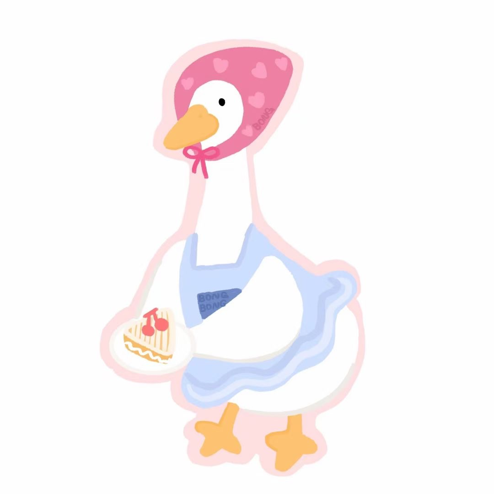
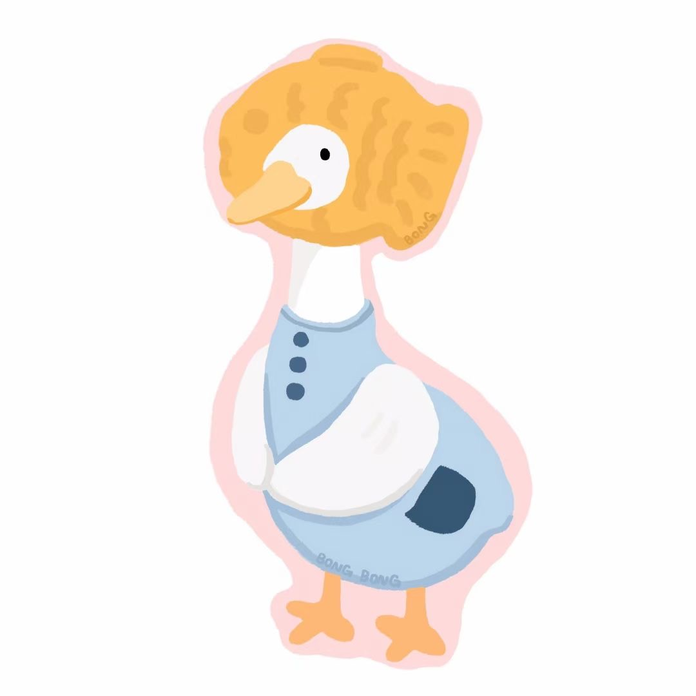

学习习惯

学习习惯
自觉阅读课外书籍
在闲暇时候，会自觉阅读课外书籍，广泛涉猎其他的课外知识
有很强的求知欲，对于一切未知的事物都会想找到答案
阅读课外书籍不仅仅是汲取其他课外的知识，更多的是可以陶养情操，培养自身的阅读习惯
积极思考，敢于大胆发表自己的见解
对于课堂上不懂得问题，会积极进行思考，分析问题，总结自己的观点
并且敢于大胆地发表出来，不害怕自己的的见解是错的而害怕发表
在课堂上会积极与老师进行互动，让自己充分投入到学习中

认真努力
个人评价
思想上积极要求上进，积极向上，积极向党组织靠拢，时刻以高标准，高要求严格要求自己
学习上严格要求自己，刻苦钻研、勤奋好学。态度端正，目标明确，基本上固定掌握了专业技能和知识
做到了理论联系实际，除了专业知识和学习外，还注意各方面知识的扩展，广泛的涉猎其他学科的知识，
从而提高自身的思想文化素质。生活上，养成了良好的生活习惯，生活充实而有条理，有严谨、良好的生活态度和生活作风
为人热情大方，诚实守信，乐于助人，拥有自己良好的处事原则，能与同学和谐相处
积极参加各项课外活动，从而不断的丰富自己的阅历。